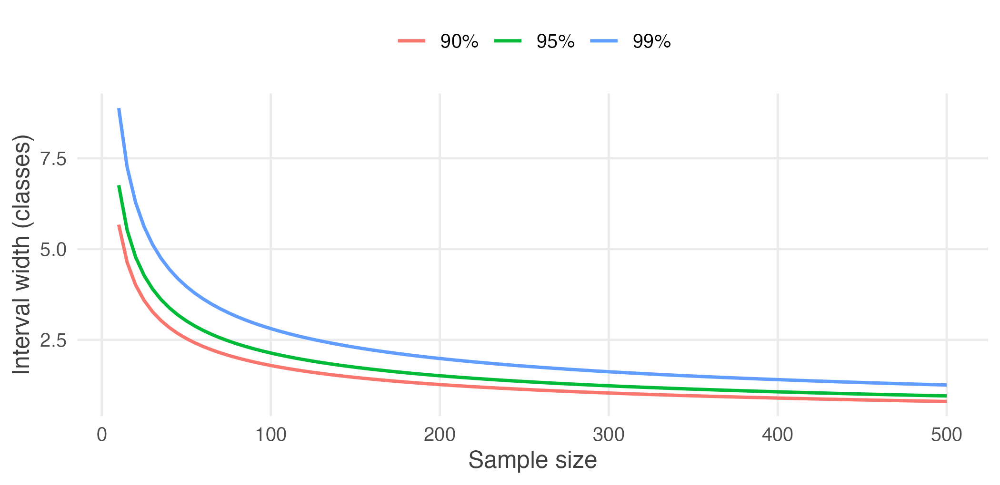

3.10 Practice problems
These are for learning. Work each one before opening the solution.
The question bank that follows has no answers at all.
Concept checks
3.1 Why does the sample variance divide by \(n - 1\) rather than \(n\)?
Because the deviations are measured from \(\bar{x}\), which was itself computed from the same observations. The sample mean is the value that makes \(\sum(x_i - \bar{x})^2\) as small as possible, so measuring spread around it gives an answer that is too small.
Formally, the deviations must sum to zero, so only \(n - 1\) of them are free to vary. Dividing by \(n - 1\) corrects the shortfall exactly, making \(s^2\) unbiased for \(\sigma^2\).
3.2 A dataset records whether each of 900 households owns a bicycle. Why is no new theory needed to estimate the proportion that do?
Because coding “owns” as 1 and “does not own” as 0 makes the proportion the mean of that column. Summing ones counts the owners, and dividing by 900 turns the count into a share.
So \(\hat{p}\) is a sample mean, and everything already established — unbiasedness, standard error falling with \(\sqrt{n}\), approximate normality by the Central Limit Theorem — applies without modification.
3.3 Explain why a 99% confidence interval is wider than a 95% one.
Higher confidence requires the interval to succeed more often across repeated samples, and the only way to succeed more often is to claim less. Widening the interval makes it easier to capture \(\mu\).
The trade-off is unavoidable. An interval guaranteed to contain the truth would have to span every possible value, and would carry no information.
3.4 For which value of \(p\) is a proportion hardest to estimate precisely, and why does that make sense?
\(p = 0.5\), since \(p(1-p)\) is maximised there.
It makes sense because an evenly split population is the one where samples can most easily land either way. If 99% of households have electricity, almost any sample says so. If 50% do, the sample proportion has real room to move.
This is why survey planners use \(p = 0.5\) when computing sample sizes: it is the worst case, so it is safe whatever the truth turns out to be.
3.5 A student reports a 95% interval of \([24.4, 27.8]\) and writes: “so 95% of students attend between 24.4 and 27.8 classes.” What has gone wrong?
The interval is about the population mean, not about individual students.
It says the average attendance is plausibly between 24.4 and 27.8. Individual students vary far more widely — the standard deviation is about 5.5 classes, so many students lie well outside that range.
Note also that the interval narrows as \(n\) grows, whereas the spread of students does not change at all. The two quantities behave differently, which is a sign they are measuring different things.
Explain
3.6 Explain what the “95%” in a 95% confidence interval refers to, and why it cannot refer to the particular interval you have computed.
It refers to the procedure. If samples were drawn repeatedly and an interval constructed from each by this method, about 95% of those intervals would contain the population parameter.
It cannot refer to the interval in front of you because nothing about it is random any more. The population mean is a fixed number, and once the sample is drawn, the two endpoints are fixed numbers too. Either \(\mu\) is between them or it is not; there is no probability left in the situation.
The randomness lived in which sample was drawn, and that was spent. The 95% is a statement about the method’s track record, which is why we report the interval and its confidence level together — the level describes how much such statements can generally be trusted.
3.7 Why is the \(t\) distribution needed at all, and why does it stop mattering in large samples?
When \(\sigma\) is known, the only quantity estimated from the sample is \(\bar{x}\). When \(\sigma\) is unknown, \(s\) is estimated from the same data, so both the centre and the width of the interval are subject to sampling error. A sample with an unusually small \(s\) produces an interval that is narrow and poorly positioned, and those errors compound. Using 1.96 anyway gives about 92% coverage at \(n = 10\) instead of 95%.
The \(t\) distribution has heavier tails, widening the interval by exactly enough to restore the advertised coverage.
It stops mattering in large samples because \(s\) becomes an increasingly reliable estimate of \(\sigma\). The critical value falls from 2.776 at \(n = 5\) to 1.984 at \(n = 100\), approaching 1.96 as the degrees of freedom grow. Once \(s\) is essentially known, there is nothing left to correct for.
3.8 A colleague computes a two-sided 95% interval, notices that it barely includes zero, and recomputes it as a one-sided bound so that zero falls outside. Explain the problem.
The confidence level describes a procedure fixed in advance. Once the choice between one-sided and two-sided is made after seeing where the data fell, the procedure being followed is no longer the one whose 95% property was established.
The real procedure here is “compute a two-sided interval, and if it fails to give the answer I want, switch.” That procedure covers the truth far less than 95% of the time, because it has two chances to produce the conclusion sought.
One-sided bounds are legitimate when the question is genuinely one-directional — a regulator who cares only about exceeding a limit. What makes them illegitimate is choosing the direction from the data.
Numerical problems
3.9 A sample of 10 professors reported the following hours worked in a week: 48, 22, 19, 65, 72, 37, 55, 60, 49, 28.
- Estimate the population mean.
- Estimate the population variance and standard deviation.
- Estimate them again given that the population mean is known to be 46 hours.
- Why does (iii) use a different divisor?
(i) \(\bar{x} = 455/10 = 45.5\) hours.
(ii) With \(\mu\) unknown, deviations are taken from \(\bar{x} = 45.5\) and \(\sum(x_i - \bar{x})^2 = 3034.5\):
\[s^2 = \frac{3034.5}{9} = 337.17 \qquad s = 18.36\]
(iii) With \(\mu = 46\) known, deviations are taken from 46 and \(\sum(x_i - \mu)^2 = 3037\):
\[\widehat{\sigma}^2 = \frac{3037}{10} = 303.7 \qquad \widehat{\sigma} = 17.43\]
(iv) In (ii) the centre was estimated from the sample, costing one degree of freedom. In (iii) it was known, so none was spent.
Notice that the sum of squares is larger in (iii) — 3037 against 3034.5 — because \(\bar{x}\) minimises that sum and \(\mu\) is not \(\bar{x}\). The larger total divided by the larger \(n\) is what keeps both estimates unbiased.
3.10 The average life of a sample of 10 tyres was 28,400 km. Lifetimes are normally distributed with \(\sigma = 3{,}300\) km.
- Construct 90%, 95% and 99% confidence intervals for the mean life.
- Find a value that, with 95% confidence, is larger than the population mean.
- Find a value that, with 99% confidence, is smaller than the population mean.
\(\sigma/\sqrt{n} = 3300/\sqrt{10} = 1043.6\).
(i)
\[\begin{aligned} 90\%:&\quad 28400 \pm 1.645(1043.6) = [26683,\ 30117] \\ 95\%:&\quad 28400 \pm 1.960(1043.6) = [26355,\ 30445] \\ 99\%:&\quad 28400 \pm 2.576(1043.6) = [25712,\ 31088] \end{aligned}\]
(ii) A one-sided upper bound at 95% uses \(z_{0.05} = 1.645\): \(28400 + 1.645(1043.6) = 30{,}117\) km.
(iii) A one-sided lower bound at 99% uses \(z_{0.01} = 2.326\): \(28400 - 2.326(1043.6) = 25{,}973\) km.
Note that (ii) uses 1.645 rather than 1.960: the whole 5% sits in one tail, because we are making a claim in one direction only.
3.11 In a random sample of 400 death certificates of college students, 98 recorded a motorcycle accident.
- Estimate the proportion of such deaths due to motorcycle accidents.
- Estimate the standard error of that estimate.
- Construct a 95% confidence interval.
(i) \(\hat{p} = 98/400 = 0.245\).
(ii)
\[\widehat{\mathrm{se}}(\hat{p}) = \sqrt{\frac{0.245 \times 0.755}{400}} = \sqrt{0.000462} = 0.0215\]
(iii) \(0.245 \pm 1.96(0.0215) = [0.203,\ 0.287]\).
So between about 20% and 29%, with 95% confidence.
3.12 In a random sample of 1,000 secondary school teachers in Karnataka, 518 identify as women.
- Construct a 95% confidence interval for the population proportion.
- Construct a 90% upper confidence bound.
- Can the state conclude that women are a majority of the profession?
\(\hat{p} = 0.518\) and \(\widehat{\mathrm{se}} = \sqrt{0.518 \times 0.482 / 1000} = 0.0158\).
(i) \(0.518 \pm 1.96(0.0158) = [0.487,\ 0.549]\).
(ii) \(0.518 + 1.282(0.0158) = 0.538\).
(iii) No. The 95% interval contains 0.5, so the data are also consistent with women being slightly under half of secondary school teachers. The point estimate is above half, but a sample of a thousand cannot separate 51.8% from 50% with confidence.
This is a good illustration of why the interval is reported rather than the point estimate alone. “51.8% of teachers are women” and “between 48.7% and 54.9% are” support very different headlines.
3.13 A state wants to estimate the proportion of households with a functioning water connection to within 2 percentage points at 95% confidence.
- How many households must be surveyed?
- A pilot suggests the proportion is near 0.85. How many are needed now?
- Why is (i) larger, and when should it still be preferred?
(i) With no prior information, use the worst case \(p = 0.5\):
\[n = \frac{1.96^2 (0.5)(0.5)}{0.02^2} = \frac{0.9604}{0.0004} = 2401\]
(ii) With \(p = 0.85\), \(p(1-p) = 0.1275\):
\[n = \frac{1.96^2 (0.1275)}{0.0004} = 1225\]
Roughly half as many.
(iii) Because \(p(1-p)\) is largest at 0.5, so that choice always gives the biggest requirement and therefore a safe one.
It should still be preferred when the pilot is thin, or drawn from a non-representative area, or when the true proportion might differ across the state. If the real figure turns out to be 0.5 and the survey was sized for 0.85, the margin of error will exceed the 2 points promised.
R exercises
3.14 Using data/attendance-grades.csv, compute point estimates of the
mean, variance and standard deviation of attendance, semester GPA and final
score. Then construct 95% confidence intervals for each mean.
students <- read.csv("data/attendance-grades.csv")
vars <- c("attendance", "sem_gpa", "final_score")
est <- t(sapply(vars, function(v) {
x <- students[[v]]
n <- length(x)
se <- sd(x) / sqrt(n)
tc <- qt(0.975, df = n - 1)
c(mean = mean(x), var = var(x), sd = sd(x), se = se,
lower = mean(x) - tc * se, upper = mean(x) + tc * se)
}))
round(est, 3)#> mean var sd se lower upper
#> attendance 26.147 29.757 5.455 0.209 25.736 26.558
#> sem_gpa 6.503 3.391 1.841 0.071 6.364 6.641
#> final_score 90.856 21.455 4.632 0.178 90.507 91.205The intervals are narrow because \(n = 680\) is large. Note that var() and
sd() already use the \(n - 1\) divisor, so no manual correction is needed.
3.15 Verify the \(n-1\) correction yourself. Treat attendance as a population, draw 20,000 samples of 8, and compare the average of \(\frac{1}{n}\sum(x_i - \bar{x})^2\) with the average of \(\frac{1}{n-1}\sum(x_i - \bar{x})^2\).
att <- students$attendance
sigma2 <- mean((att - mean(att))^2)
set.seed(21)
n <- 8
out <- replicate(20000, {
x <- sample(att, n, replace = TRUE)
c(over_n = mean((x - mean(x))^2), over_n_1 = var(x))
})
round(c(population_variance = sigma2,
avg_over_n = mean(out[1, ]),
avg_over_n_1 = mean(out[2, ]),
predicted_over_n = sigma2 * (n - 1) / n), 3)#> population_variance avg_over_n avg_over_n_1 predicted_over_n
#> 29.71 26.18 29.91 26.00Dividing by \(n\) understates the population variance, and it does so by exactly the predicted factor \((n-1)/n = 7/8\). Dividing by \(n - 1\) recovers the right answer on average.
The bias is not small at this sample size — about 12% — which is why the
correction is built into var() rather than left to the user.
3.16 Treat wages-india-synthetic.csv as a population and let \(p\) be the
proportion of workers in urban areas. Draw 1,000 samples of 400, construct a
95% interval from each, and count how many contain the true \(p\).
wages <- read.csv("data/wages-india-synthetic.csv")
is_urban <- as.numeric(wages$residence == "Urban")
p_true <- mean(is_urban)
set.seed(4)
ci <- t(replicate(1000, {
s <- sample(is_urban, 400, replace = TRUE)
ph <- mean(s)
ph + c(-1, 1) * 1.96 * sqrt(ph * (1 - ph) / 400)
}))
c(true_p = p_true,
coverage = mean(ci[, 1] <= p_true & ci[, 2] >= p_true))#> true_p coverage
#> 0.2684 0.9580Close to the advertised 95%. The method delivers what it promises for a proportion of this size at this sample size.
It would perform less well for a very rare characteristic — with \(p = 0.01\) and \(n = 400\) the expected number of successes is 4, the normal approximation is poor, and coverage falls short. A common rule of thumb requires both \(np\) and \(n(1-p)\) to be at least 10.
3.17 Show that the \(t\) correction matters. On a normal population with \(\mu = 50\) and \(\sigma = 12\), compare the coverage of intervals built with 1.96 against those built with the \(t\) critical value, for \(n = 5, 10, 30\) and 100.
set.seed(30)
cover <- t(sapply(c(5, 10, 30, 100), function(n) {
r <- replicate(20000, {
x <- rnorm(n, 50, 12)
se <- sd(x) / sqrt(n)
c(abs(mean(x) - 50) < 1.96 * se,
abs(mean(x) - 50) < qt(0.975, n - 1) * se)
})
c(n = n, using_z = mean(r[1, ]), using_t = mean(r[2, ]))
}))
round(cover, 4)#> n using_z using_t
#> [1,] 5 0.8792 0.9510
#> [2,] 10 0.9193 0.9486
#> [3,] 30 0.9404 0.9498
#> [4,] 100 0.9484 0.9508The \(t\) intervals hold their 95% at every sample size. The \(z\) intervals fall well short when \(n\) is small, and the gap closes as \(n\) grows — by \(n = 100\) the two are nearly indistinguishable.
This is the whole case for the \(t\) distribution in one table, and also the reason nobody worries about it in large samples.
3.18 How does interval width respond to sample size and confidence level? Using the attendance population, plot the width of the confidence interval for the mean against \(n\), for the 90%, 95% and 99% levels.
sigma_att <- sqrt(mean((att - mean(att))^2))
grid <- expand.grid(n = seq(10, 500, by = 5),
level = c(0.90, 0.95, 0.99))
grid$width <- 2 * qnorm(1 - (1 - grid$level) / 2) * sigma_att / sqrt(grid$n)
grid$level <- factor(paste0(100 * grid$level, "%"))
ggplot(grid, aes(n, width, colour = level)) +
geom_line(linewidth = 0.8) +
labs(x = "Sample size", y = "Interval width (classes)", colour = NULL) +
theme_book() +
theme(legend.position = "top")
Figure 3.2: Confidence interval width against sample size, at three confidence levels.
Width falls as \(1/\sqrt{n}\), steeply at first and then hardly at all. Most of the available precision is bought in the first hundred observations.
The three curves never cross, and the gap between them narrows in absolute terms as \(n\) grows. Choosing 99% over 95% is expensive in a small survey and nearly free in a large one.